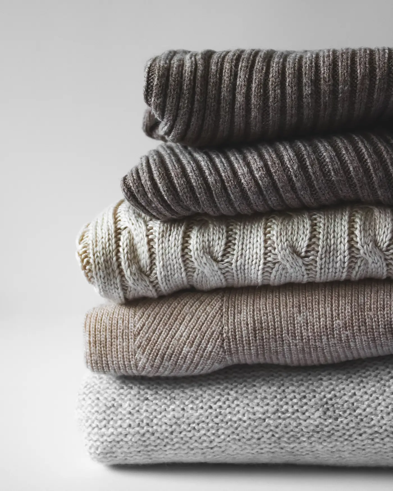
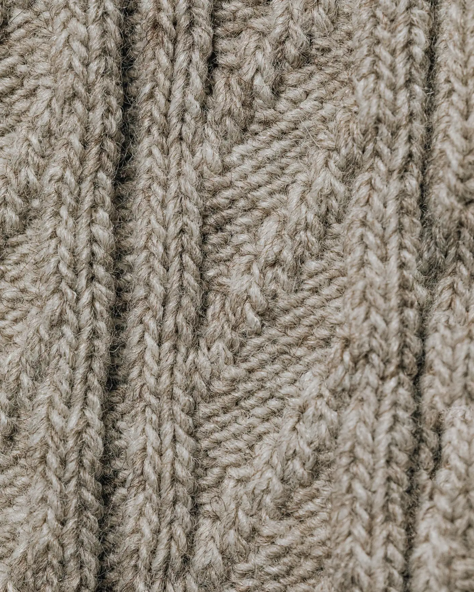
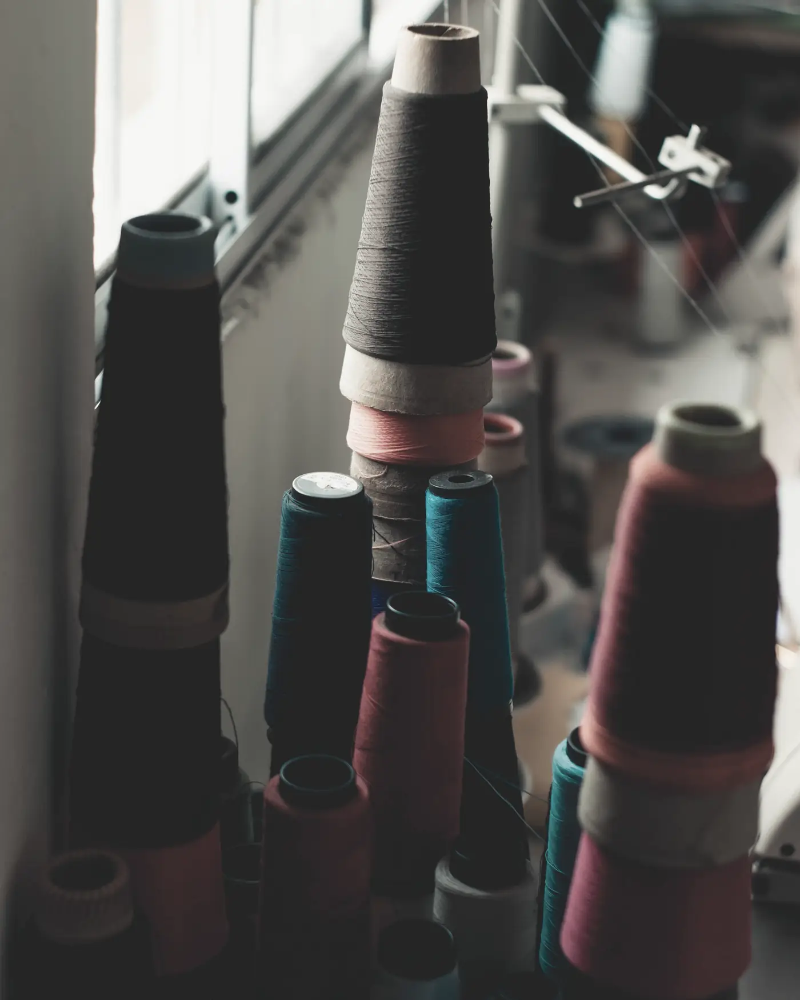
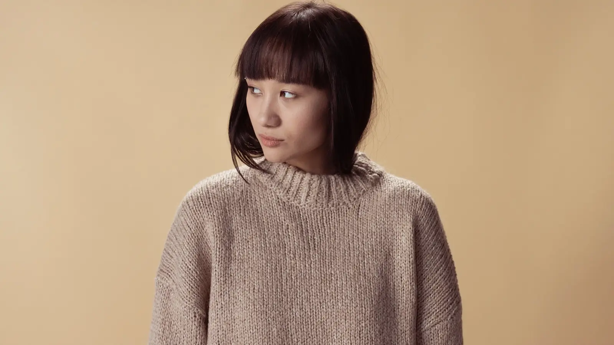
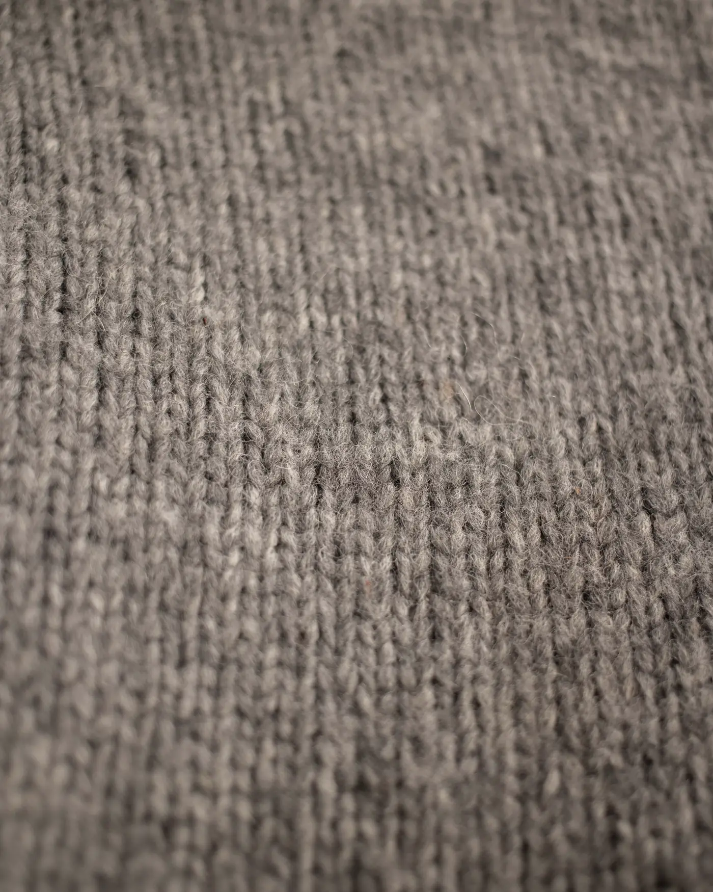

Encore is a closed-loop service that collects luxury brands' textile waste, sorts it by fibre, recycles it and sells the fibre back to them.
Team Atelier Zero · Startup Generation Challenge Verona 2026

Every season, high-end brands are left with unsold stock, returns and offcuts in premium wool, cashmere and linen. Destroying them is increasingly illegal in Europe. Recyclers exist, but each works differently, with no shared standard and no proof of where fibre ends up. So most of it is lost.
The recycling technology already exists. What's missing is trust between brands and recyclers: one shared standard and one record nobody can alter.
You hand over unsold stock, returns and offcuts. Infrared scanners identify each item's fibre and the batch goes to the best certified recycler in our network. Every step is certified on blockchain. Our AI lets you ask, in plain language, where any kilo came from. Buy back the recycled fibre through Encore at a discount.


Unsold stock, returns and offcuts are collected. Infrared scanners identify each item's exact fibre in seconds.
Every batch goes to the partner best suited to its fibre. Each scan and handover is certified on blockchain.
Ask our AI anything about your fibre in plain language. Buy it back at a discount, certified.
For high-end fashion brands that, at the end of every season, face unsold stock, returns and premium offcuts they can neither sell nor destroy.
Your unsold stock is frozen capital. Encore turns it into fibre you buy back below market price, protecting your brand and your margin.
| Company | Takes back the brand's own stock | NIR fibre sorting | Network of recyclers | Blockchain certificate | Fibre back to the same brand |
|---|---|---|---|---|---|
| Encore | Yes | Yes | Yes | Yes | Yes |
| Re.Verso | No | No | No | No | No |
| Manteco | No | No | No | No | No |
| TextileGenesis | No | No | No | Yes | No |
| Reverse Resources | No | No | Yes | No | No |
| Fibersort | No | Yes | No | No | No |
Based on each company's public offering, October 2026. Re.Verso and Manteco produce certified recycled wool and cashmere; TextileGenesis traces fibre on blockchain; Reverse Resources matches factory leftovers with recyclers; Fibersort builds NIR sorting machines.
One brand, one recycler, one batch of unsold wool knitwear. A handheld infrared scanner identifies every item, each step is certified on a blockchain, an AI assistant answers questions on the data, and the brand buys back the yarn discounted.

Your end-of-season stock stops being a cost and a risk, and becomes cheaper fibre for your next collection.

Thank you.